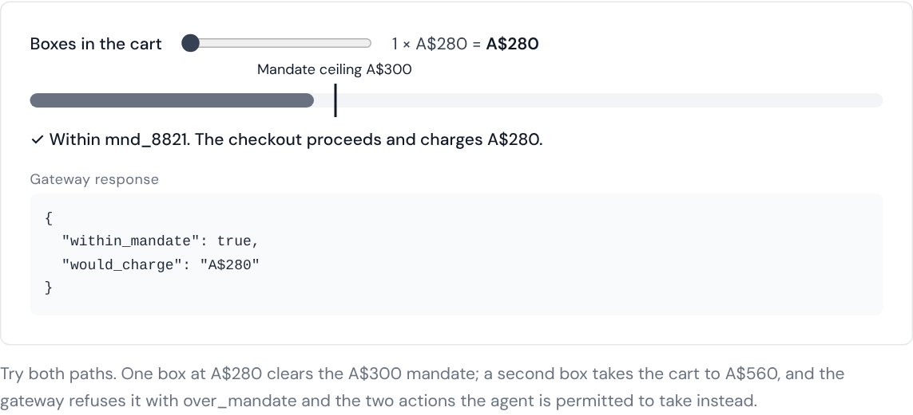
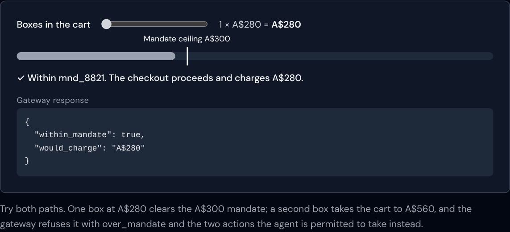
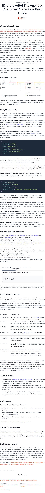
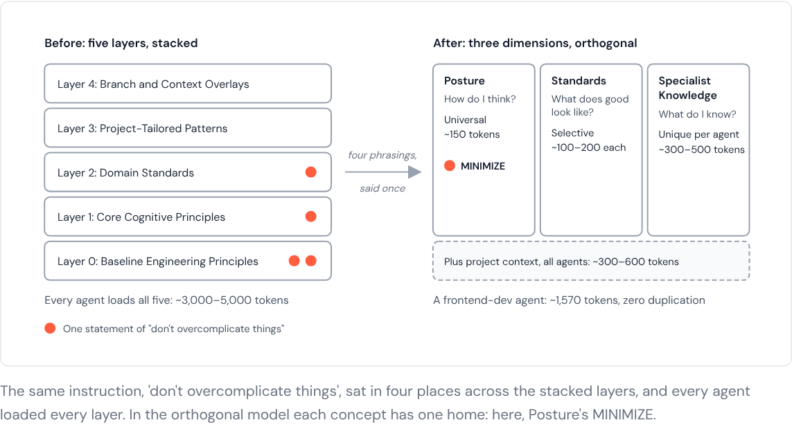
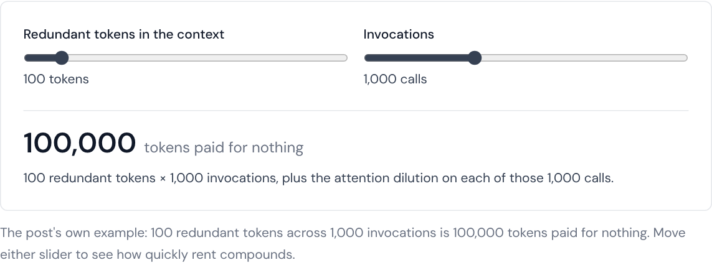
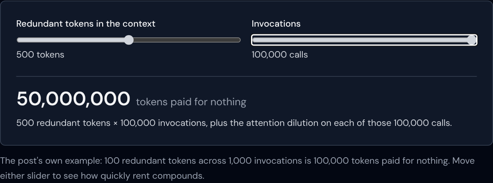
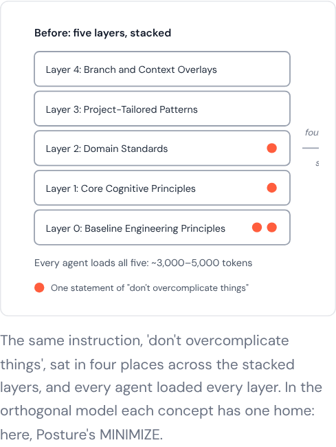

Both are draft copies (draft: true), built and rendered on the real site. Your published posts are unchanged. Every number, label and description in the visuals comes from the post itself.
| Where this is coming from | ToneContractions; two sentences merged with a colon. |
| The shape of the work | KeptYour journey diagram, byte-for-byte. |
| The eight components | ToneThe bold thesis now reads "you don't tell the agent 'please don't overspend'". |
| The worked example, end to end | VisualThe mandate checkout explorable, placed right after both paths are described. |
| What to integrate, not build | ToneOne long sentence split; table unchanged. |
| What NOT to build · The first sprint | Kept |
| How you'll know it's working | ToneHeading and one sentence contracted. |
| The whole guide in one line | CutIt restates the body. Concision rule 4: a closing summary stays only if it adds. See your calls below. |
| This is a work in progress | ToneKept as the close; it invites argument, which is a next step. |
Personal pivot (from the developer harness to products) → the late-90s analogy → one example threaded through: an agent buying a booster box with an A$300 ceiling → the shape of the work (your diagram) → the eight components → the example end to end. The reader has just read both the in-budget and the over-budget path, then plays them in the explorable. Seeing the gateway refuse the second box confirms the post's central rule by doing, not by reading again. Then: what to integrate, what not to build, the first sprint, how to measure it, and the honest close.
Fixed: "a A$300" → "an A$300" (twice).

over_mandate JSON. Your journey diagram earlier in the post is unchanged.

| Introduction | TrimmedGeneric "Introduction" heading removed; the opening is unchanged. |
| The naive approach | Kept |
| The over-engineered approach | VisualThe rent explorable, placed right after "100,000 wasted tokens", at the post's turning point. |
| The three dimensions | VisualThe before-and-after diagram, after the three questions, once the problem has been earned. TrimmedOne sentence in Standards repeated an earlier paragraph. |
| The comparison · The deduplication proof | KeptBoth tables identical. |
| What I learned | CutPrinciples 1–4 restated the body almost word for word. The six headings stay; each body keeps only the line that adds something. Principle 5 trimmed; principle 6 kept whole. |
| Close | Kept"Everything else is rent you're paying for an empty room." |
Three iterations: too shallow → thorough but wasteful → the realisation that context is rent → the fix (three dimensions) → proof (comparison and deduplication tables) → lessons → close. The two visuals sit at the two turns of that arc. The explorable lands at the realisation, so the reader feels the rent by turning it up. The diagram lands at the reveal and draws the difference: four highlighted dots scattered across five stacked layers, collapsing into one dot in Posture's MINIMIZE.
This post was already casual in register (71 contractions), so the change is structural. The word-level pass found only 1 of 13 "just / actually / also" that carried no meaning.




TokenRent is a new component and is draft-only until you approve it. It's listed in the blog-visuals catalogue as pending.